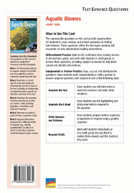

Online Resources
Online ResourcesRelated Resources
Text-Dependent Comprehension
Scaffolded Reading and Comprehension
Related Titles
Online Resources

Lexile® 920L
Aquatic Biomes
Content Focus
Essential Question
Supporting Questions
Enduring Understanding
ELA Strategies and Skills
Text-Dependent Comprehension
Vocabulary
Writing to Sources
What Makes This Text Complex? | |
Purpose and Levels ➌ | The purpose of this text is to describe, compare, and contrast the different aquatic biomes on Earth. (pp. 3–6)* |
Structure ➌ | The text includes multiple text structures including explanatory text, cause and effect, compare and contrast, and narrative text. (p. 7)* |
Language Conventionality ➌ | The text includes both simple and complex sentence structures. Domain-specific and academic vocabulary words are supported throughout (p. 8)* |
Knowledge Demands ➌ | Basic knowledge of Earth, Life, and Physical Science is required. |
Qualitative text complexity dimensions from the CCSS are scored on the following scale:
➊—Low; ➋—Middle Low; ➌—Middle High; ➍—High
*Citations refer to pages within this teacher’s guide that address the specific text complexity.
LEXILE® is a trademark of MetaMetrics, Inc., and is registered in the United States and abroad.
Common Core Standards © Copyright 2010. National Governors Association Center for Best Practice and Council of Chief State School Officers. All rights reserved.
© Benchmark Education Company, LLC. All rights reserved. Teachers may photocopy the reproducible pages for classroom use. No other part of the guide may be reproduced or transmitted in whole or in part in any form or by any means, electronic or mechanical, including photocopy, recording, or any information storage or retrieval system, without permission in writing from the publisher.
Objectives
Informational Text
Life Science
Ecology
Support for English Learners
Support students to access the text by orally introducing academic vocabulary, language, and concepts
Scaffold the Reading
Scaffolded Preview
Introduction
Pages 4–5. The introduction describes the devastating effects humans have had on a vast marshland in Iraq that was once the home of many unique species and a source of livelihood for thousands of native people.
Support for Struggling Readers
Support students to access complex text by having them first read the PRIME Bridges edition.
First Read
Aquatic Biomes Teacher’s Guide
Introduce the Text SL.6.1b, SL.6.1c
Preview and Make Predictions
Invite students to flip through the book and view photos, or project the whiteboard version of the text and preview the pages together.
Have students turn to the Table of Contents and read the chapter heads and supporting questions for each chapter.
Invite students to read the book description and the About the Author blurb on the back cover.
Ask: How do these features help you figure out what you’ll learn about in this book?
Collaborative Whole-Group Discussion
Ask: What do you know about aquatic biomes?
If your students need more support, use the Scaffolded Preview provided for each section.
Have students turn to pages 4–5, or display the pages on the whiteboard. Read aloud the text, or listen and follow along with the talking e-book in the whiteboard edition.
Invite students to quickly generate a list of questions they have about aquatic biomes.
Choose the reading option that best meets the needs of your students.
For students who need more support with comprehension, consider scaffolding them into the on-level text using the PRIME Bridges Edition.
© Benchmark Education Company, LLC
Read Chapter 1RI.6.2, RST.6.2, SL.6.1
Set a Purpose
If necessary, use the Scaffolded Preview and Cognates for Essential Vocabulary to help students access the text.
Read aloud the supporting question on page 6: What are the characteristics of each marine biome?
Say: As you read this chapter, you will use a strategy called Q-Notes to help you understand the characteristics of each marine biome.
Display the Q-Notes sample shown in the right margin.
Say: The Q-Notes process is a form of note-taking. As you read, write down questions in the left column. You can do this by rewriting the headings, subheadings, and topic sentences as questions. Continue reading to find the answers, and record them in the right column of the Q-Notes chart. Q-Notes help you focus on the most important information in a text.
Read aloud page 9 and model how you use the Q-Notes format.
Have students create a Q-Notes chart on notebook paper, or distribute copies of BLM 1.
Show students how you form a question from the topic sentence, What are the ocean’s three major sections, or zones? Write the question in the left column of the Q-Notes chart. Then have students read to find the answer. Have them record their answers in the right column, using a short answer, picture, or any form of note-taking that effectively helps them capture the information. Circulate to monitor and provide help as needed. Remind students that asking questions about what they read will help them focus on and summarize the key ideas in each chapter.
Summarize Key Concepts: Think and Write Together
Invite students to share their Q-Notes. What questions did they ask in the left column? Do the answers they recorded in the right column provide information needed to understand central ideas and concepts? Provide time for students to share and discuss their notes with the class.
Use the Sentence Frames to Support Collaborative Conversation for English learners.
As a group, construct a two- to three-sentence written summary of the key ideas in the chapter. If students need more support to summarize the text, explicitly model strategies for summarizing.
Model Summarizing
Say: When we summarize, we include only the most important information in a text. We look for the central ideas. We don’t include all of the details. Let’s summarize a section of this chapter together.
Reread page 13.
Say: This page is about the ocean’s disphotic, or twilight, zone. I ask myself, “What is the central idea the author wants me to understand about the disphotic zone?”
Allow responses. Support students to recognize that the author wants readers to understand where in the ocean the disphotic zone is and what lives there. As part of the explanation, the author describes adaptations of some animals that live in the disphotic zone. While this is helpful in understanding the characteristics of this part of the ocean, it is not essential to the summary.
Say: In my summary, I will focus on what the disphotic zone is and what lives there.
|
The ocean’s disphotic, or twilight, zone ranges from 200 to 1,000 meters deep. Both the pressure of water and the dimness of light increase with depth. Animals that move between the ocean’s surface and the deeper waters of the disphotic zone have adaptations that allow them to survive in the ocean’s depths. While there is much life in the disphotic zone, it is spread thin. |
Sample Summary (Chapter 1)
© Benchmark Education Company, LLC
Aquatic Biomes Teacher’s Guide
Support for English Learners
Scaffolded Preview
Chapter 1
Page 10. We’ll find out how the euphotic zone near the ocean’s surface gets enough light to carry out photosynthesis.
Page 12. Look at the photos. We’ll read about adaptations that protect ocean animals from predators.
Pages 17. We’ll read how coral reef habitats provide food and shelter for a variety of ocean life.
Cognates (English/Spanish) for Essential Vocabulary
adaptation/la adaptación (page 7)
community/la comunidad (page 7)
coral reef/el arrecife coral (page 17)
marine/marion(a) (page 7)
plankton/el plancton (page 10)
|
Question |
Answer |
|
What are the three major zones in the ocean? |
euphotic, disphotic, and aphotic |
Sample Q-Notes
Support for English Learners
Sentence Frames to Support Collaborative Conversation
Based on my notes, I know _____.
Based on my notes, the chapter’s central idea is _____.
An important concept from this chapter is _____.
Support for Struggling Readers
Support students to access complex text by having them first read the PRIME Bridges edition.
Aquatic Biomes Teacher’s Guide
© Benchmark Education Company, LLC
Read Chapter 2 RI.6.2, RST.6.2
Set a Purpose
If necessary, use the Scaffolded Preview and Cognates for Essential Vocabulary to help students access the text.
Read aloud the supporting question on page 24: What are the characteristics of freshwater biomes?
Say: As you read this chapter, continue using Q-Notes to focus on the characteristics of freshwater biomes. Then we’ll collaborate to summarize the main ideas and details.
Have students create a Q-Notes chart on notebook paper, or distribute copies of BLM 1.
Review the note-taking process as needed.
Choose the reading option that best meets the needs of your students.
Summarize Key Concepts: Think/Pair/Write/Share
Invite students to share their Q-Notes with a partner and agree on the key ideas in the chapter. Explain that partners should collaborate to write their own two- to three-sentence summaries of the key information in the chapter.
Use the Sentence Frames to Support Collaborative Conversation for English learners.
Support students to reread their notes and/or the chapter and to differentiate between the writer’s key ideas and the supporting details she uses.
Review the definition of a summary.
Say: Remember, a summary is a short statement of the most important information
in a text.
Bring students together and ask several pairs of students to share their summaries. As a whole group, evaluate the summaries and identify any key information that was omitted. As needed, clarify students’ understanding of the supporting question.
As a group, construct a written summary of the key ideas in the chapter.
|
Less than 1% of available freshwater on Earth exists in freshwater biomes, including wetlands, ponds and lakes, streams and rivers, and estuaries. Each freshwater biome contains living organisms adapted to the local conditions. Plants and animals in wetlands are adapted to the seasonal changes in water levels. Lakes and ponds contain species that thrive in both the light-filled shallow waters and deep, dark depths. Wildlife near rivers and streams are adapted to the constantly moving water. Lush plants grow in estuaries, where a river’s freshwater meets the ocean’s salt water. |
Sample Summary (Chapter 2)
© Benchmark Education Company, LLC
Aquatic Biomes Teacher’s Guide
Support for English Learners
Scaffolded Preview
Chapter 2
Pages 25-26. We’ll learn about the special adaptation of wetland plants and animals.
Page 30. We’ll find out how streams and rivers form, and discover organisms that live in these moving waters.
Page 32. Look at the photos. We’ll learn that estuaries are important links that connect marine and freshwater biomes.
Cognates (English/Spanish) for Essential Vocabulary
conservation/la conservación
(page 34)
extinct/extinto (page 36)
climate/el clima (page 38)
pollution/la polución (page 36) species/la especie (page 37)
Sentence Frames to Support Collaborative Conversation
One way lakes differ from ponds is_____.
Animals visit rivers and streams to _____.
Based on my notes, the chapter’s central idea is _____.
Support for English Learners
Scaffolded Preview
Chapter 3
Page 36. From overfishing to pollution, we’ll discover the many ways people are causing damage to aquatic biomes.
Pages 38-39. What conservation efforts are being made to protect aquatic habitats? Find out in this chapter.
Page 39. We’ll read about what we can do to reduce the size of our ecological footprints.
Conclusion
Page 43. We are reminded of the consequences human actions have on aquatic biomes, and how we can work to protect them. The author tells of how local people were able to restore the damaged Iraqi marshland by tearing down the dams and dikes that were causing the problem, but how, unfortunately, the marsh is facing new challenges.
Cognates (English/Spanish) for Essential Vocabulary
estuary/el estuario (page 32)
Sentence Frames to Support Collaborative Conversation
Based on my notes, the central idea for this chapter is _____ .
Some ways of protecting aquatic habitats from further destruction include_____.
You can reduce the size of your ecological footprint by _____.
Aquatic Biomes Teacher’s Guide
Read Chapter 3 and Conclusion RI.6.2, RST.6.2
Set a Purpose
If necessary, use the Scaffolded Preview and Cognates for Essential Vocabulary to help students access the text.
Read aloud the supporting question on page 34: How can people save aquatic biomes for the future?
Set a purpose for the first read.
Say: As you read this chapter, continue using the Q-Notes strategy to focus on how people can save aquatic biomes for the future. Then we’ll collaborate to summarize the main ideas and details.
Have students create a Q-Notes chart on notebook paper, or distribute copies of BLM 1.
Review the note-taking process as needed.
Choose the reading option that best meets the needs of your students.
Summarize Key Concepts: Think and Write Independently
Give students a few moments to review their Q-Notes and to write their own two- to three-sentence summary of the key information in this chapter.
Use the Sentence Frames to Support Collaborative Conversation for English learners.
Bring students together, and ask several volunteers to read their summaries aloud. As a whole group, evaluate the summaries and identify any key information that was omitted. As needed, clarify students’ understanding of the supporting question.
As a group, construct a written summary of the key ideas in the chapter.
Reread the summary that your class has collaborated to write.
|
Aquatic biomes are suffering at the hands of humans. The damage includes decreasing populations of aquatic life, pollution, destruction of large areas of wetlands, and changing weather patterns. With conservation efforts, such as limiting the removal of wildlife, establishing laws to protect habitats, and creating parks and reserves, people can reverse the damage and prevent further destruction. |
Sample Summary (Chapter 3)
© Benchmark Education Company, LLC
Close Reading Option 1: Identify and Describe Cause and Effect RI.6.5, RST.6.5
Model Finding Text Evidence
Display and read aloud the close reading question.
|
The author uses a cause-and-effect text structure to explain why animals and plants in aquatic biomes behave as they do. What evidence can help you identify cause and effect in a text? |
Explain that the question asks the reader to use strategies to identify cause and effect in the text.
Say: To identify cause and effect in a text, I look for certain words that signal what happened (effect) and why (cause). Sometimes there are no signal words, so to find cause and effect, I can ask myself what happened (effect) and why (cause).
Reread page 10 as students follow along.
Say: In the third paragraph, the author uses the signal word reason to explain why ocean animals have adaptations that protect them from predators. The reason is that there is nowhere for them to hide in the open ocean.
Support Practice
Ask students to turn to page 10.
Collaborative conversation (turn and talk). Ask students to turn to a partner and reread the last paragraph and identify a cause and effect.
Ask: Why are plants and algae able to grow as deep as 200 meters (660 feet) below the surface?
Bring students together and invite pairs to share the cause and effect they identified. Agree upon the key idea that the cause and effect explains.
Find Text Evidence Independently
Ask students to reread the second paragraph on page 14 to identify why dragonfish and other deep-sea animals create their own light. Students should record their findings, and identify a new understanding based on the cause-and-effect relationship.
Confer with individual students to support their independent close reading. Encourage them to explain how identifying cause and effect contributes to their understanding of aquatic biomes.
© Benchmark Education Company, LLC
Aquatic Biomes Teacher’s Guide
Close Reading and Analysis
Close Reading Options
Support students to dig deeper into the text. Choose one or more of these close reading options, or choose an alternate focus that addresses students’ needs.
Routine for Finding Text Evidence
|
Cause |
Effect |
|
there is nowhere for animals to hide in the open ocean |
animals have adaptations that camouflage them and protect them from predators |
Sample Cause-and-Effect
Graphic Organizer
Aquatic Biomes Teacher’s Guide
Close Reading Option 2: Use Context Clues to Determine Word Meaning RI.6.4, RST.6.4
Model Finding Text Evidence
Display and read aloud the close reading question.
|
What context clues can help a reader understand the meaning of the term adaptations on page 7? |
Explain that the question asks the reader to identify evidence in the text that can help define the term.
Say: This text uses words and phrases specific to aquatic biomes. To figure out their meaning, we look for evidence in the text. Evidence can be direct definitions, synonyms, examples, or descriptions. We’re going to read closely to figure out the meaning of words using context clues. Knowing how to do this will help us read many kinds of complex texts.
Reread the second paragraph on page 7. Highlight the term adaptations.
Say: The author provides a direct definition of adaptations: “features that help them [plants and animals] survive and reproduce.” I can confirm the definition of adaptations in the glossary.
Support Practice
Have students turn to page 25.
Display and highlight the term freshwater.
Say: Let’s close read the text where this word appears, and look for context clues to help us figure out the meaning.
Collaborative conversation (turn and talk). Say: Turn to a partner. Reread the first paragraph and identify evidence from the text that help you define the term freshwater. Write down a definition of freshwater to share with the class.
Bring students together and ask several pairs to read aloud their evidence and definition. Check the glossary to confirm the definition.
Close Read Independently
Ask students to close read the first paragraph on page 36 and write down evidence that can help them define the word extinct. Students should write down evidence from the text and their definitions, then check them against the glossary. Confer with individual students to support their independent close reading.
© Benchmark Education Company, LLC
Close Reading Option 3: Identify an Author’s Claim and Supporting Evidence RI.6.8, RST.6-6.1
Model Finding Text Evidence
Display and read aloud the close reading question.
|
What evidence supports the author’s claim that photosynthesis is the basis of all life in the ocean? |
Explain that the question asks the reader to find evidence in the text that supports the author’s claim.
Say: I’m going to show you how I read closely to evaluate an author’s argument or claim. To evaluate the validity of an author’s claim, I need to identify evidence in the text that supports it.
Reread page 10 while students follow along.
Say: The author provides evidence to support the claim that photosynthesis is the basis of all life in the ocean. She explains that the energy obtained from photosynthesis allows plants and green algae to grow. She also states that photosynthesis produces oxygen that is used by water animals.
Display a blank graphic organizer like the one in the margin. Write the argument or claim in the left column, and then ask students to recall evidence in the text that directly supports the argument.
Complete the graphic organizer.
Support Practice
Read aloud page 13 as students follow along. Display a blank graphic organizer like the sample in the margin.
Collaborative conversation(turn and talk). Say: Think about the author’s claim that there is a tremendous amount of life in the twilight zone. Find evidence in the text to support that argument. Talk to your partner, and complete a graphic organizer.
Find Text Evidence Independently
Ask students to reread page 38. Have them find evidence to support the author’s claim that when people destroy a habitat, they also destroy all the plants and animals in it.
Ask: How did supporting the author’s claim with evidence from the text help your understanding of the concepts?
© Benchmark Education Company, LLC
Aquatic Biomes Teacher’s Guide
|
Author’s |
Supporting Evidence |
|
Photosynthesis is the basis of all life in the ocean. |
Energy obtained from photosynthesis allows plants and green algae to grow. (p.10) Photosynthesis produces oxygen that is used by water animals (p.10) |
Sample Author’s Claim and
Supporting Evidence
Graphic Organizer
Aquatic Biomes Teacher’s Guide
Close Reading Option 4: Answer Text Evidence Questions RI.6.1, RI.6.2, RI.6.4, RST.6.1
Draw and Support Inferences
Display and read aloud the close reading question.
|
What evidence from the text supports the inference that the organisms that live in wetlands can survive changes in climate and weather patterns? |
Text Evidence: “Wetlands can be very shallow or even dry during part of the year. Wildlife in wetlands has adapted to this annual wet/dry cycle.” (p.25) “Plants in wetlands also have special adaptations. Mosses absorb fifteen times their weight in water. The stored water sustains the moss through several dry months.” (p. 26) RI.7.1, RI.8.1
Identify and Determine Central Idea and Key Details
Display and read aloud the close reading question.
|
Find text evidence to support the claim that dams and canals were responsible for the destruction of the vast Iraqi marshlands. |
Text Evidence: “Each new dam made the wetlands smaller.” “Newly built canals diverted almost all of the river water away from the thriving and complex living community.” “More than 90% of the Iraqi marsh dried up. The lush water plants of the wetlands disappeared. The animals died or moved away.” (p. 5) RI.7.2, RI.8.2
Determine Word Meaning
Display and read aloud the close reading questions.
|
How is the term wetlands used in this book? What context clues help the reader understand the meaning of the term? |
Definition: an area where the soil is wet enough for aquatic plants to grow
Text Evidence: “Wetlands have soil wet enough for aquatic plants to grow. Bogs, marshes, swamps, and fens are kinds of wetlands. Wetlands may be flooded forest or great expanses of water grasses.” (p. 25) RI.7.4, RI.8.4
© Benchmark Education Company, LLC
Build Language and Vocabulary
Extend Language Concepts: Synonyms L.6.5
Read the following sentence from page 7:
“All of these scenes take place in the marine world, the realm of salt water.”
Say: In this sentence, the words marine and saltwater are synonyms; they have similar meanings. Synonyms are often used in text to help explain the meaning of a word.
Have students work in pairs to look through the book for additional examples of synonyms. Ask students to share their findings. Monitor and provide feedback as necessary. Record the synonyms on a chart to refer to throughout the rest of the unit.
Turn and talk. Challenge partners to compose sentences with different synonyms based on information in the text. Have partners share their sentences with the rest of the class and explain how the synonyms affect their sentences.
Extend Language Concepts: Present Participles L.6.1
Read the following sentences from page 14:
“The only source of energy at these depths is food falling from above.”
Say: A present participle is a verb form that expresses present, ongoing action. Present participles can also act as adjectives. The present participle falling in this example is a verb that expresses ongoing action.
Read the following sentence from page 14:
“Swirling clouds of white bacteria flakes surround the vents called snowblower vents.”
Say: In this sentence, the present participle swirling is an adjective that describes the clouds.
Have students work in pairs to find more examples of present participles. Have them list the sentences in which the present participle is used. As students share their findings, record them on chart paper under the title “Examples of Present Participles.”
© Benchmark Education Company, LLC
Aquatic Biomes Teacher’s Guide
Extend Meaning
Examples of Synonyms
Page 7. “The plants and animals in each community have adaptations, or features that help them survive and reproduce.”
Page 9. “The ocean has three major sections, or zones."
Page 34. “Conservation is the careful protection of Earth’s natural areas and wildlife.”
Examples of Present Participles
Page 23. “Why are we draining our wetlands and polluting our rivers?”
Page 25. “The wildlife of a rushing river looks and acts differently from the wildlife of a mucky swamp or a calm pond.”
Page 30. “Animals come from the surrounding land to visit every kind of river and stream.”
Page 38. “Many lakes and rivers are fed by water melting from the great ice sheets called glaciers.”
Interactive Activities
Independent Learning
Answer Key
Interactive Activities
Visit BenchmarkEducation.com for additional interactive personal learning activities.
Aquatic Biomes Teacher’s Guide
Text Evidence
Question Card
Reading, Writing, Speaking, and Listening RI.6.1, RI.6.2, RI.6.4, RI.6.6, W.6.1, W.6.2, W.6.3, W.6.4, W.6.5, W.6.6, W.6.7, W.6.8, W.6.9, RST.6.7, RST.6.8
Practice Finding Text Evidence
Have students work independently or with a partner to answer questions that require them to find evidence in the text using the Text Evidence Question Card for this book.
Writing to Sources
Use one of the text-dependent writing prompts below, or create one of your own, to give students the opportunity to demonstrate their understanding of the concepts covered in the text. Rubrics to help you evaluate students’ writing are available in the Digital Teacher’s Guide (BenchmarkUniverse.com).
Argument prompt. You are president of the environmental club at your school. Write a speech persuading your classmates to reduce the size of their ecological footprints. Explain how their actions affect the natural world. Support your argument by providing examples from the book of how specific conservation efforts can preserve aquatic biomes and keep them from further damage. Make sure that your argument has a clear introduction and concluding section.
Informative/explanatory prompt. Select an adaptation of one of the aquatic plants or animals described in the book. Explain how that adaptation helps that organism to survive. Use cause and effect signal words in your essay.
Narrative prompt. Imagine you’re a Marsh Arab living in Iraq in the 1990s. You have always made a living harvesting reeds. Describe in a letter to a friend what is happening to the wetlands and why. Include how it affects you.
Collaborative Research
Have students collaborate to complete the research project outlined on the inside back cover of the text. Use the research project as a context in which to support students’ online research skills and to strengthen students’ presentation skills by requiring them to present their findings formally.
Closed-Book Content Assessment
You may wish to have students complete a formal content assessment available in this guide (BLMs 2 and 3) and online. This assessment helps you evaluate students’ understanding of the standards-based concepts developed in the text. More information about the question types and an answer key are also available online. An answer key is provided on page 13 of this guide.
© Benchmark Education Company, LLC
Content Assessment
© Benchmark Education Company, LLC
Aquatic Biomes Teacher’s Guide
Q-Notes Guide
Directions: Turn chapter titles, subheadings, and topic sentences into questions. Write these on the left. Write answers to your questions on the right. Use bullets, dashes, symbols, abbreviations, or jotted notes for your answers.
|
Questions |
Answers |
|
Zone |
Adaptation |
|
Sunlit (euphotic zone) |
|
|
Twilight (disphotic zone) |
|
|
Midnight (aphotic zone) |
Aquatic Biomes: Content Assessment
Directions: Use what you have learned about aquatic biomes to answer the questions below.
Chapter 1
oceans, coral reefs, and seashores
Chapter 2
wetlands, ponds, lakes, streams, and rivers
Lakes and ponds: water collects; no outlet; edges warm and sunny; standing water; Streams and rivers: water comes from runoff of rain and snow, moving water; Both: freshwater biomes; plants grow in water; plants grow near edges; animals live in water; animals come to edge of water for food
Wet winter = abundance of fresh water, flooding, disruption of the balance of fresh and salt water, possible disruption of plant and animal life; dry winter = limited amount of fresh water, disrupts the balance of fresh and salt water, dry rivers and streams, disruption of plant and animal life
Chapter 3
overhunting, overfishing, pollution, destruction of habitat, and climate changes
A(n) ____________________ is a community with similar conditions.
In each biome, plants and animals have ____________________ that help them survive. The largest ____________________ biome is the ocean, or ____________________ biome. About 97% of Earth’s surface water is ____________________. ____________________ makes up the remaining 3%. When water collects in low places, ____________________ and ____________________ can form. A(n) ____________________ is where freshwater biomes and marine, or saltwater, biomes come together. Overfishing and pollution can lead to ____________________ of certain plant and animal ____________________. ____________________ is necessary to ensure the health of Earth’s aquatic biomes.
A(n) biome is a community with similar conditions. In each biome, plants and animals have adaptations that help them survive. The largest aquatic biome is the ocean, or marine biome. About 97% of Earth’s surface water is salt water. Fresh water makes up the remaining 3%. When water collects in low places, ponds and lakes can form. A(n) estuary is where freshwater biomes and marine (or saltwater) biomes come together. Overfishing and pollution can lead to extinction of certain plant and animal species. Conservation is necessary to ensure the health of Earth’s aquatic biomes.
Lakes and Ponds
Both
Streams and Rivers
Word Bank
adaptations conservation freshwater ponds
aquatic estuary lakes salt water
biome extinction marine species
BLM 3